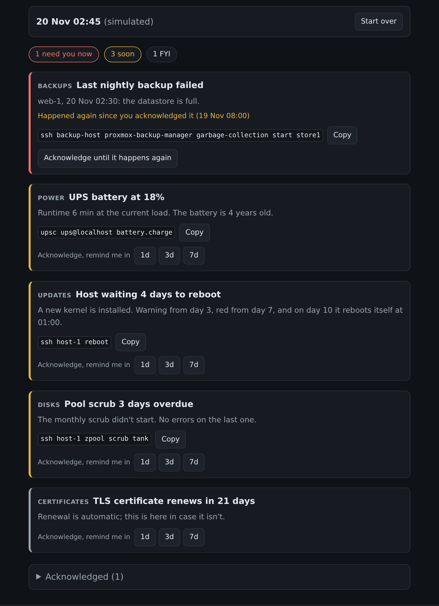

One page for what needs a person
My lab has graphs, dashboards and logs for everything. I don't read them. I read one page, which lists only the things that need me, says how bad each one is, and gives me the exact command that fixes it.

The problem
Monitoring is easy to add and hard to read. Every tool I installed came with its own dashboard and alerts, and after a few months the useful signal was buried. What I wanted was the opposite of a dashboard: an empty page when everything is fine, and when something isn't, a short list in order of how much it matters, each with what to do.
How it works
- A collector on the host runs as root every 30 minutes and gathers what only the host can see: pending updates on the host and in every container, reboot flags, the ZFS pool and its disks' SMART data, flash wear on the boot drive, backup results, the TLS certificate, the UPS, memory pressure, and when the domain expires. It pushes that as one JSON file into the web container. The container can't reach back; a "refresh now" button only drops a request file that a systemd path unit on the host watches.
- Other jobs upload their own results: a CVE watcher, the internet monitor, the network map, backup copies. Upload endpoints accept only the machine that's supposed to send them.
- The web app runs the checks and turns everything into action items. Each item has a severity
(bad, warn, info), an area, a title, a detail line, a link, and
how: the exact command the Copy button copies, written to work from where I'll be sitting. - Pushes go to my phone only for new red items, once each. Acknowledged items stay quiet, and warnings and FYIs stay on the page.
Monitors of monitors
A check that stops running looks exactly like a system that's fine. So every background job's freshness is an item too: if the collector, the CVE watcher or a backup copy hasn't reported within its expected window, that shows up on the page.
Ladders, not alarms
Many things only need me eventually. A host waiting to reboot after a kernel update is FYI for 3 days, a warning from 3 to 7, red after 7, and after 10 days the system does it at 01:00 by itself. I get time to pick the moment, and it can't be forgotten.
Acknowledge and snooze
A list of problems is only useful if I can say "I know" without the item disappearing for good. This took the most thought. The list is rebuilt from scratch every few minutes, so an acknowledgement has to recognise "the same item" again:
- Key: area plus title with the numbers taken out, so "UPS battery at 18%" and "at 17%" are one item, not a new one every refresh.
- Ongoing items (a state, like a disk filling up) come back after the reminder I picked: 1, 3 or 7 days.
- Events (something happened, like a failed backup run) stay hidden until they happen again, which the item notices through a fingerprint such as the failed run's start time.
- Worse beats acknowledged. If the severity goes up, the item comes back at once, with a note: "Got worse since you acknowledged it (19 Nov 14:05)".
- Fixed means gone for 2 hours. Then the acknowledgement is dropped. A shorter gap is just a check that didn't run this time, and dropping the acknowledgement then would make the item pop back up later as if it were new.
# from samples/health/acks.py
worse = SEV[it["sev"]] < SEV[a["sev"]]
again = it["fp"] != a["fp"]
due = a["until"] is not None and now >= a["until"]
if not (worse or again or due):
hidden.append(it)
continue
shown.append({**it, "ack_note": "Got worse since you acknowledged it" if worse else
"Happened again since you acknowledged it" if again else
"Reminder: acknowledged, still not fixed"})An item log records when each item opened and closed (gone 5 minutes counts as closed; a shorter gap continues the same row). It feeds the "last 24 hours" list on the page and the "fixed itself overnight" part of my morning briefing.
What broke
False alarms cost more than they look
My desktop drops its network link to 10 Mbit when it sleeps, so Wake-on-LAN still works. The switch-port check saw a slow link and raised a warning whenever the desktop slept. Each false alarm like that teaches me to skim the page, which is the one thing it can't afford. The fix was small (ports marked optional skip the 10 Mbit sleep link). The lesson is to treat a false alarm as a bug in the check, and fix it, rather than learn to ignore it.
A fix command has to work from where I am
Fix commands first used direct SSH into each container. I later blocked SSH into containers from my PCs, and
every copyable command for them stopped working. They now go through the host (ssh host pct exec <id> --
…), which is the path that's actually open. The Copy button is only worth having if what it copies runs.